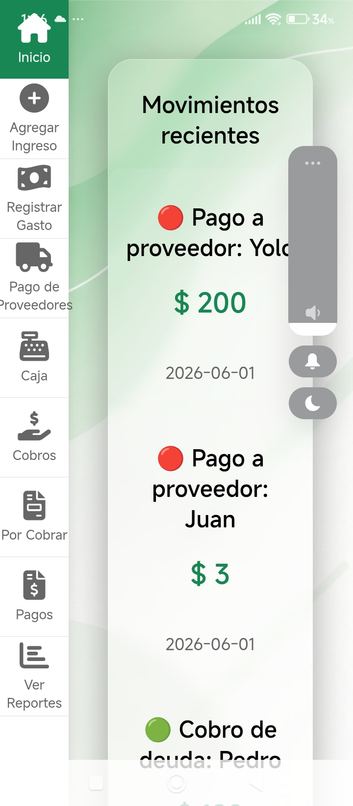
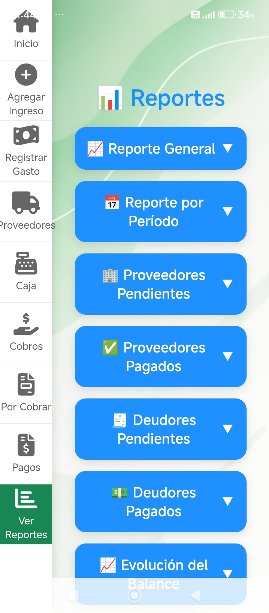

Optimización de Procesos
Pasamos tus métodos analógicos, papeles y tareas manuales a herramientas digitales eficientes y hechas a medida. Diseñamos el software que tu negocio necesita para crecer.
¿Cómo optimizamos tu forma de trabajar?
Adiós a lo Analógico
Eliminamos los cuadernos, las planillas manuales y el desorden. Llevamos toda tu información a un entorno digital seguro y accesible.
Herramientas a Medida
No te adaptás al software; el software se adapta a vos. Creamos sistemas específicos que resuelven las necesidades reales de tu día a día.
Control Centralizado
Visualizás el estado de tu negocio en tiempo real, desde cualquier dispositivo, agilizando la toma de decisiones y evitando errores.
SG Gestión Fácil
Un claro ejemplo de cómo optimizamos un negocio. Diseñamos esta aplicación Android exclusivamente para que pequeños comercios y emprendedores dejen atrás el papel y controlen todo desde el celular.


¿Necesitas Optimizar tus Procesos?
Contáctanos y trabajemos juntos en tu próximo proyecto.
Ir a Contacto